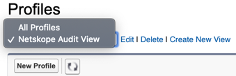
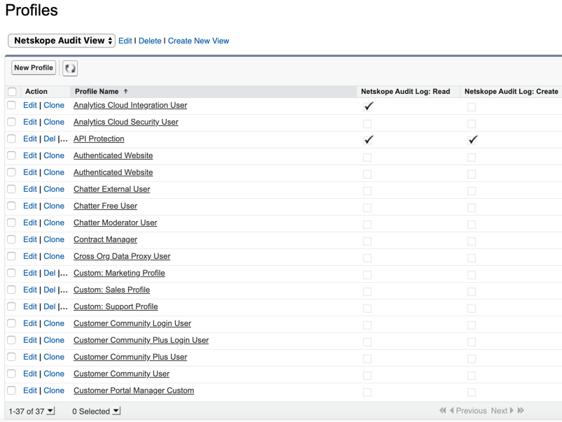
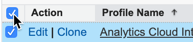
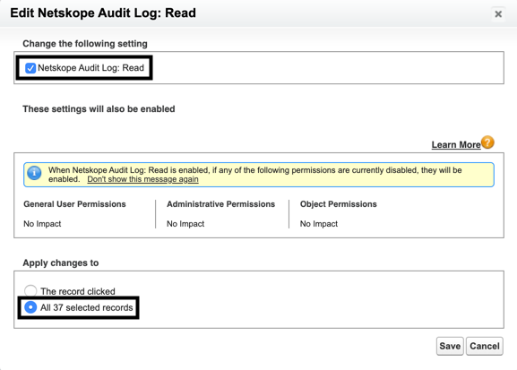
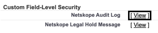

How to Assign “Netskope Audit Log Permissions - Read and Create” to Salesforce Profiles
Important
Netskope audit log permissions do not apply to the following profiles in Salesforce - Customer Portal, Customer Portal Manager, High Volume Customer Portal, Authenticated Website, Partner, and standard profiles.
Once you have installed the Netskope Audit Reports App, you can assign the Netskope Audit Log: Read and Netskope Audit Log: Create permissions to other Salesforce profiles too. To do so:
Log in https://login.salesforce.com/ as an administrator.
On the top-right, click the Gear icon > Setup.
On the left navigation bar, go to Administration > Users > Profiles.
On the Profiles page, click the All Profiles dropdown list and select Netskope Audit View.
Profiles will be listed along with the Netskope Audit Log: Read and Netskope Audit Log: Create permissions. The profiles that are ticked will trigger audit events in the Netskope UI.
Select the checkbox beside Action.
Hover the mouse under Netskope Audit Log: Read for one of the profile names and double click the pencil icon.

The Edit Netskope Audit Log: Read window opens. Select the Change the following setting: Netskope Audit Log: Read checkbox and under Apply changes to, select All 37 selected records. Click Save.
Important
Netskope audit log permissions do not apply to the following profiles in Salesforce - Customer Portal, Customer Portal Manager, High Volume Customer Portal, Authenticated Website, Partner, and standard profiles.
Follow steps 5-7 for Netskope Audit Log: Create permission.
Ensure that the profile has the read and edit access for Netskope Audit Log. To do so:
On the left navigation bar, go to Administration > Users > Profiles.
On the Profiles page, click the All Profiles dropdown list and select Netskope Audit View.
Click all the profiles that have the Netskope Audit Log: Read or Create permission.
Note
You must follow steps c-f for each profile that has the Netskope Audit Log: Read or Create permission.
Scroll down to the Custom Field-Level Security section and click View beside Netskope Audit Log.
If the Edit Access checkboxes are not checked for all the field names, click Edit and under Edit Access select all the checkboxes. On selecting the Edit Access checkboxes, the Read Access checkboxes get selected too.

Important
You cannot select the Edit Access checkbox for Created By and Last Modified By fields.
Click Save.